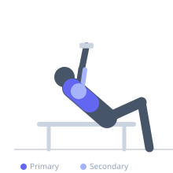

Exercise guide / Incline Dumbbell Press
Incline Dumbbell Press
The incline dumbbell press targets the upper pectoralis major using independent dumbbells on an inclined bench. The unilateral loading allows each arm to move independently, promoting balanced development and enabling a greater range of motion at the bottom of the lift.
Primary muscles
pectoralis major clavicular
Secondary muscles
deltoid anterior
triceps long head
triceps lateral head
Stabilizers
supraspinatus
infraspinatus
Equipment
Dumbbell (Fixed)
Adjustable Bench (Incline / Decline)


Starting position
- Set an adjustable bench to 30–45 degrees. Sit on the bench with a dumbbell on each knee, then use leg drive to bring them to chest level as you recline. Hold dumbbells with palms facing forward at the sides of your upper chest.
Setup
- Adjust the bench angle before loading up. Use knee-kick technique to get heavy dumbbells into position safely. Retract and depress shoulder blades before pressing.
Steps
- Press both dumbbells upward and slightly inward until arms are nearly extended.
- Lower under control until your upper arms are parallel to the floor or slightly below, feeling a stretch in the upper chest.
- Pause briefly at the bottom, then press back up with controlled power.
Coaching cues
- Press the dumbbells in an arc — not straight up
- Feel the upper chest stretching at the bottom position
Breathing
- Inhale on the way down, exhale on the press.
Range of motion
- Full range: upper arms slightly below parallel at the bottom, arms nearly extended at top.
Tempo
- 2-1-1-0
Common mistakes
- Letting the dumbbells drift too wide at the bottom, overstressing the front of the shoulder
- Excessive bench angle reducing pec involvement
Safety
- Drop dumbbells to the sides rather than trying to sit up with them after a failed rep
- Use a spotter when attempting heavy weights
Training
- hypertrophy: 8–15 reps
- endurance: 15–20 reps
- hypertrophy: 3–4 sets
- endurance: 2–3 sets
- Rest: {'hypertrophy': 90, 'endurance': 45}